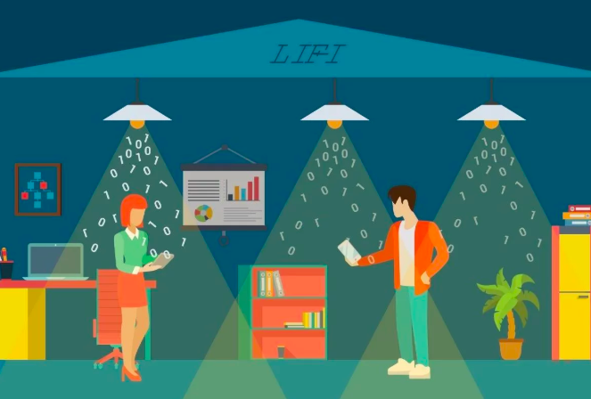

Li-Fi
 Li-Fi (Light Fidelity) is wireless communication technology which utilizes light to transmit data and position between devices. The term was first introduced by Harald Haas during a 2011 TEDGlobal talk in Edinburgh. In technical terms, Li-Fi is a light communication system that is capable of transmitting data at high speeds over the visible light, ultraviolet, and infrared spectrums. In its present state, only LED lamps can be used for the transmission of visible light.
In terms of its end use, the technology is similar to Wi-Fi -- the key technical difference being that Wi-Fi uses radio frequency to transmit data whereas Li-Fi uses the modulation of light intensity to transmit data. Owing to light’s high frequency, Li-Fi can transmit data at an speed of about 1GBits/s but it cannot penetrate opaque objects.
I am currently working to make a Li-Fi system which can transmit data from one Arduino to another using visible light. For the purpose I’ll be using laser to transmit data and a L.D.R. to receive data. The project was also proposed at IFI, Kolkata.